wind_y Flight Report
Generated from simulator truth, control, sensor, and event logs.
Summary
| scenario | wind_y |
|---|---|
| samples | 164 |
| duration_s | 4.89 |
| max_altitude_m | 29.7616 |
| max_speed_mps | 135.409 |
| max_load_factor_g | 3.92747 |
| max_qbar_pa | 11197.8 |
| min_target_distance_m | - |
| event_count | 3 |
Events
- max_altitude at 2.730 s - Maximum altitude was 29.76 m.
- apogee at 2.760 s - Vertical velocity crossed through zero.
- ground_impact at 4.890 s - Vehicle intersected the terrain model.
Plots
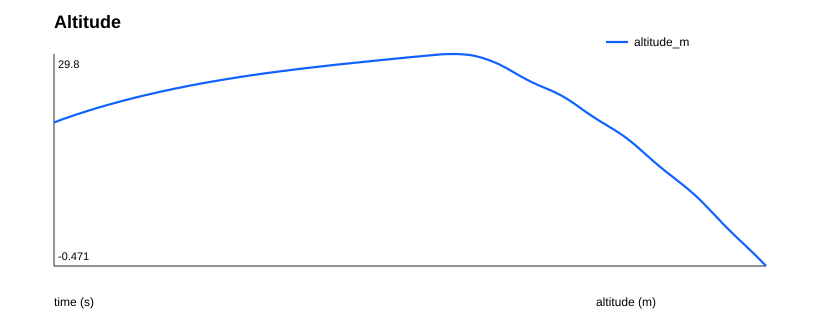
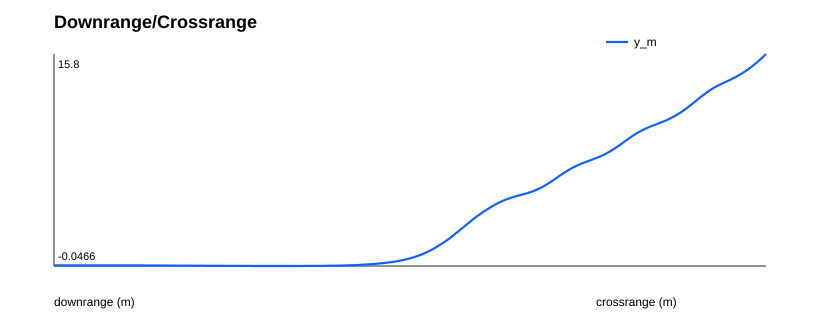
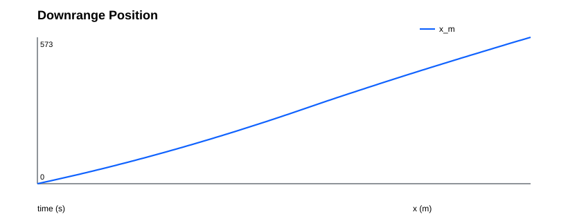
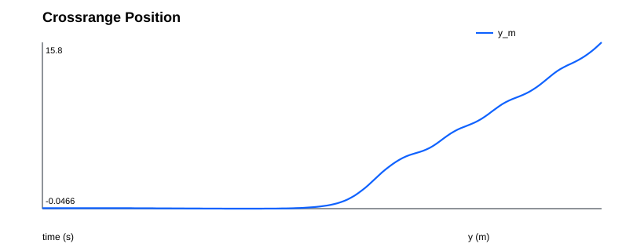
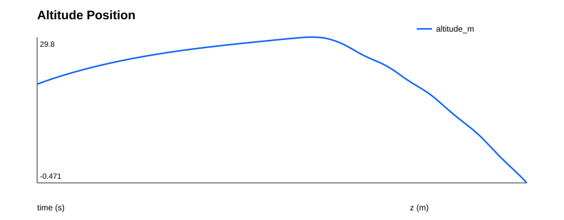
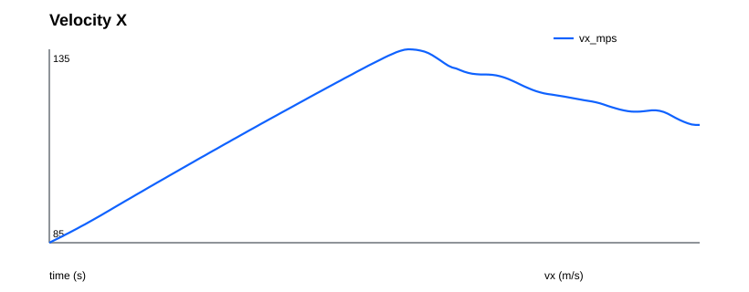
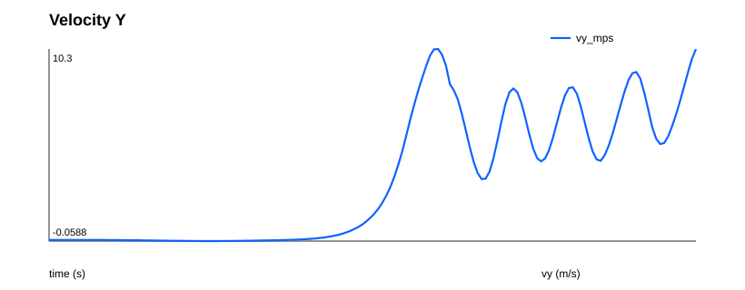
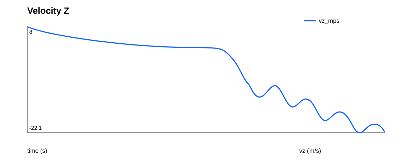
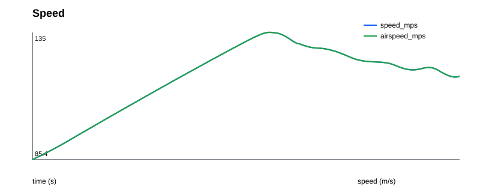
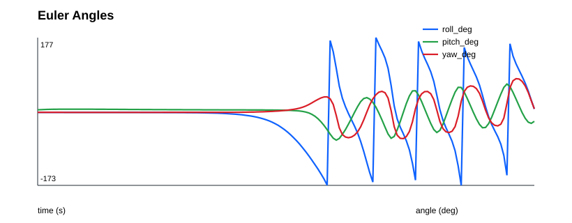
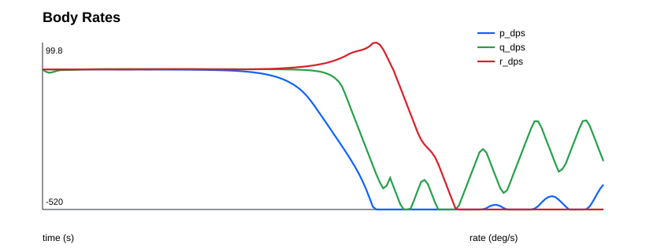
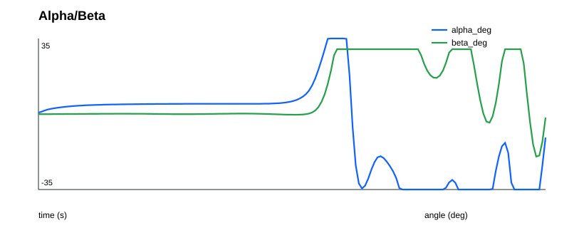
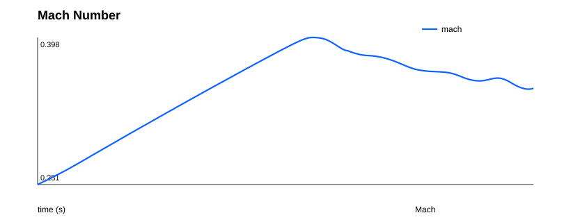
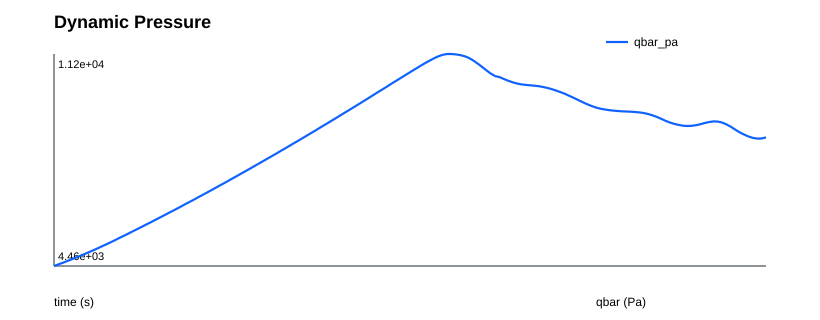
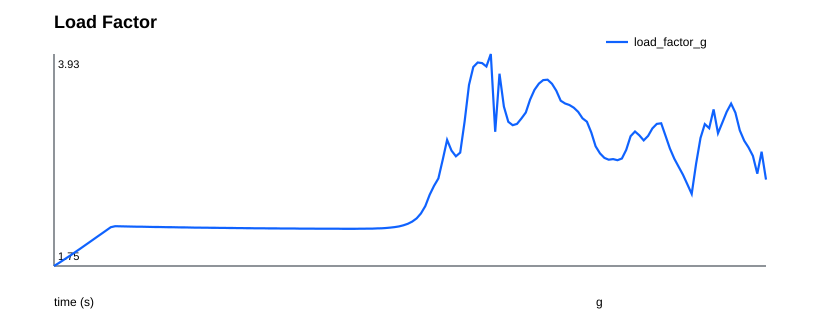
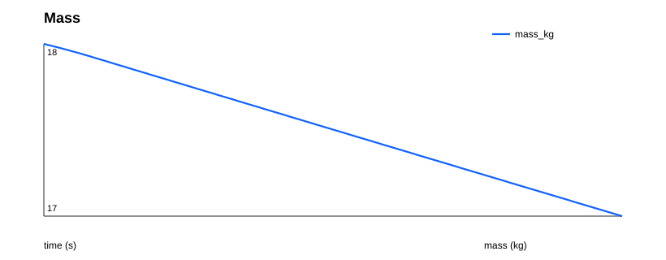
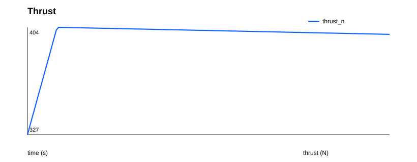
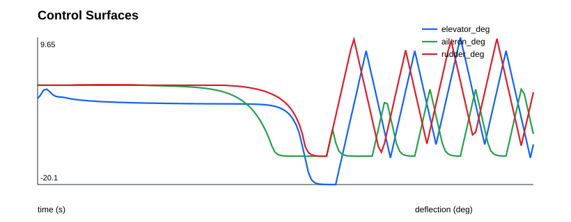
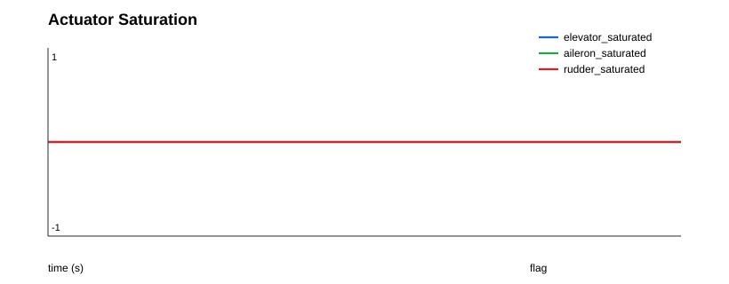
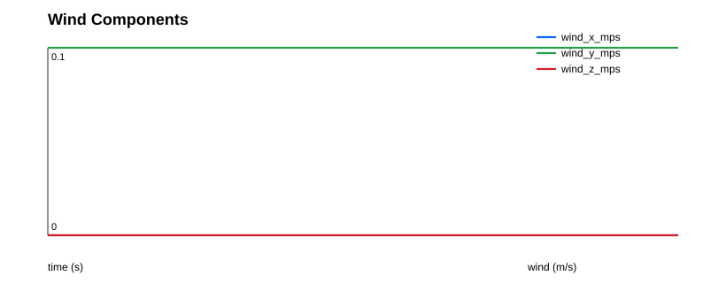
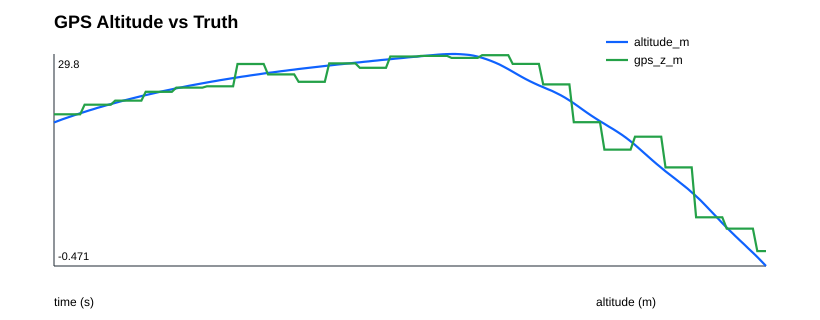
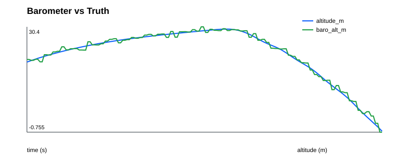
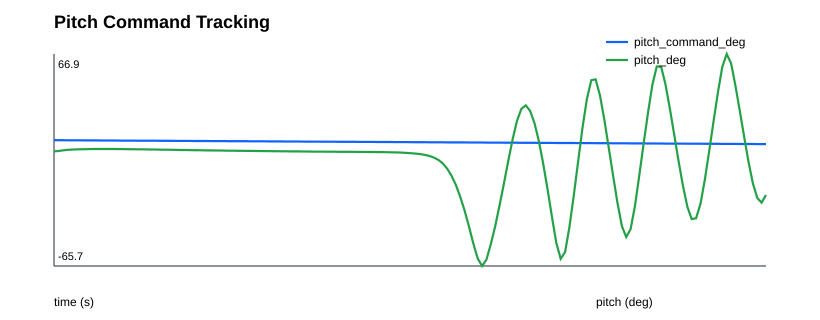
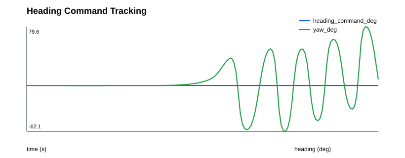
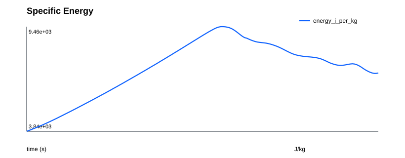
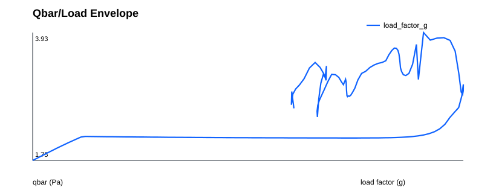